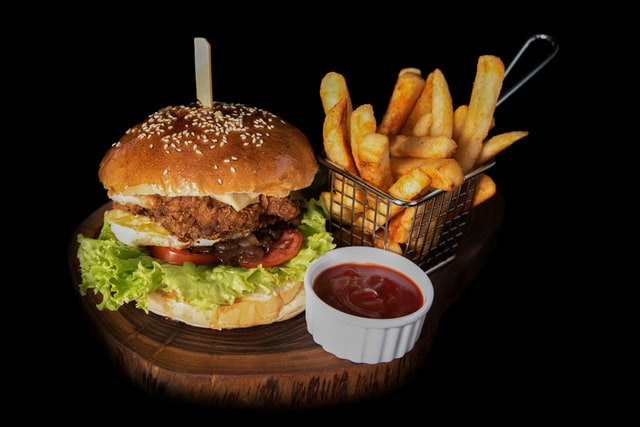
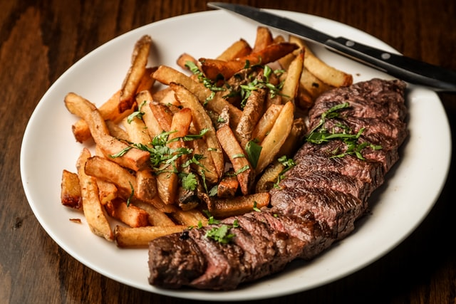

Burger
Rețeta de burger de vită făcut în casă este ideală pentru oricine vrea să se bucure de acest preparat fără să-l comande într-un restauranta sau, mai rău, într-un fast-food.
Creveți

Creveți cu usturoi este o rețeta care va salvează oricând, la prânz sau cină, mai ales dacă sunteți iubitori ai fructelor de mare! Creveții se gătesc foarte ușor și rapid, iar combinația de creveți și usturoi este una clasică, pe care toată lumea o iubește!
Friptură
Cred că e cea mai îndrăgită friptură a românilor: bucăți de carne, legume și sos format prin coacere. Sos, nu băltoacă! Foarte puțină lume gătește carnea cum trebuie și alege bucăți întregi.
Pizza

Pizza, unul dintre cele mai faimoase preparate italiene, și-a câștigat popularitatea prin faptul că poate fi pregătită în numeroase moduri și este întotdeauna savuroasă. În plus, prepararea nu este așa dificilă pe cât pare și poți oricând să îți gătești acasă o pizza personalizată, după gustul tău.